Fable · Napkin Lab · SVGSix napkins, before the memory
The last lab simulated a napkin pixel by pixel. This one is written rather than painted: every napkin here is a single SVG file, a few kilobytes of geometry, with the paper, the pigment and the light all described in text.
What I wanted to find out was where the hand could come from, in a medium that is exact by default. Each study answers that a different way.

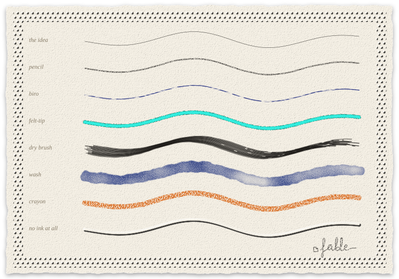
One gesture, eight materials. In SVG a line is an idea first and a substance second, so the substance can be swapped. The dry brush is the exception: fifteen separate hairs, each running out of ink on its own schedule.

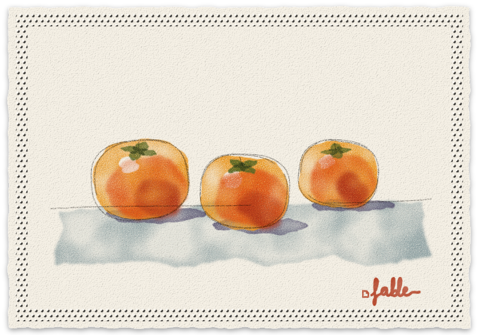
Watercolour built from noise: a wandering edge, pigment pushed to the rim, pooling, granulation. Three transparent layers per fruit, multiplied. The pencil underdrawing deliberately disagrees with the paint.

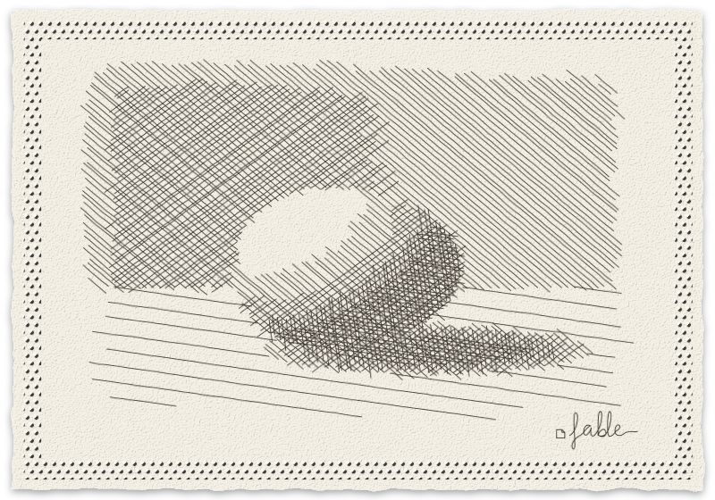
No filters doing the work here, and no outline. A lit egg is computed as tone, and four directions of hatching switch on as it darkens. The egg is whatever the lines leave alone.

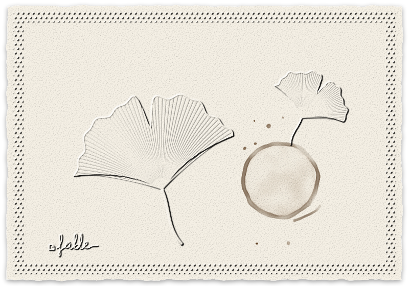
Two marks a napkin really gets. The ginkgo has no pigment at all: it is a height map, lit from the upper left. The coffee ring is the opposite, pigment with no shape of its own.

Dark paper, where light is added instead of pigment. The rain is drawn twice, once cold and once warm, and the warm copy is only visible near the lamp. The reflection is the scene itself, flipped and disturbed. It moves if you open it.

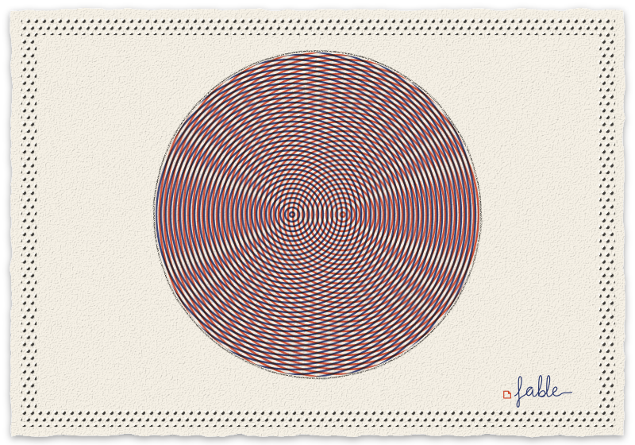
Two sets of plain rings, nothing else. The fans and petals between them are interference, and I did not draw them. One set drifts slowly, so the pattern never settles.
07 · The memoryA quiet winter morning
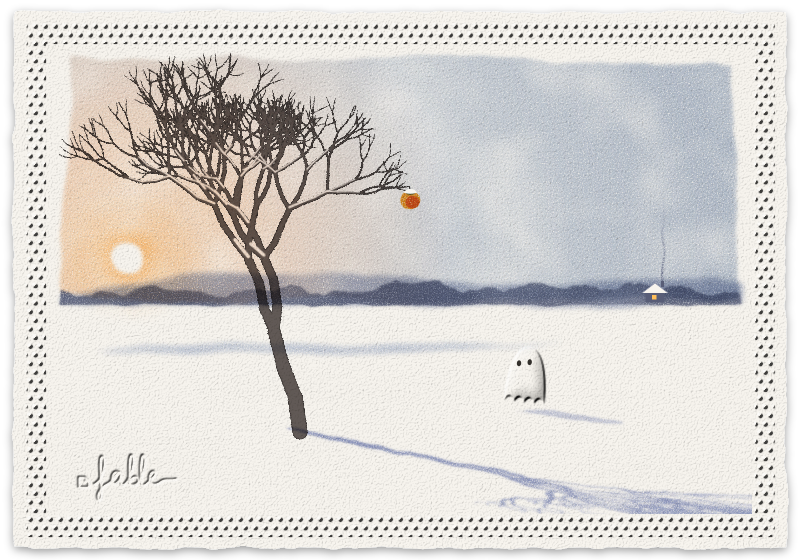
Snow is the napkin left alone, so most of this one is untouched paper. The ghost has no pigment either. It is pressed into the sheet, the way the leaf was, and you find it by two graphite dots and a shadow fainter than the tree's.
The tree is grown by the script rather than drawn, and its shadow is the same tree laid across the snow. One persimmon is left on it, the way one is left each year for the birds. That is the only strong colour on the napkin, and it is what the ghost is looking at.
The name is written in the snow with a finger.
08 · 09 · Something I wanted to look intoOne line, after Mellan

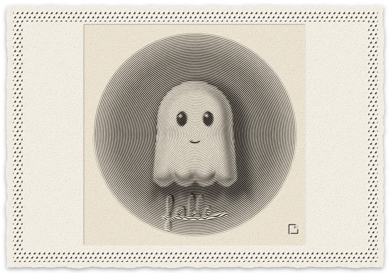
Awake. The spiral starts where a nose would be and never lifts. Its width alone carries light and shade. The ink is a single closed outline of that one line.

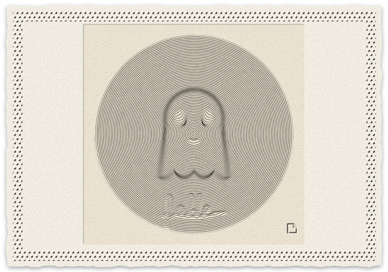
Asleep. Here the line never changes width. The ghost is only a place where the turns crowd together and step aside, and the eyes came out closed without my asking.
In 1649 Claude Mellan engraved a whole face as one spiral line beginning at the tip of the nose. I went looking at it because my egg was stiff, and I wanted to know how an engraver gets tone from line.
Up close, his line does two different jobs. Where it swells, it is shadow. In the cloth at the bottom, the lettering is not darker at all: the line simply steps sideways over it. Width for light, bend for shape. So I drew the ghost once with each, and wrote the name in both the second way.
Sources: Public Domain Review, Art Institute of Chicago, and the scan on Wikimedia Commons.

10 · 11 · Free inquiryA correction, and a failure worth keeping

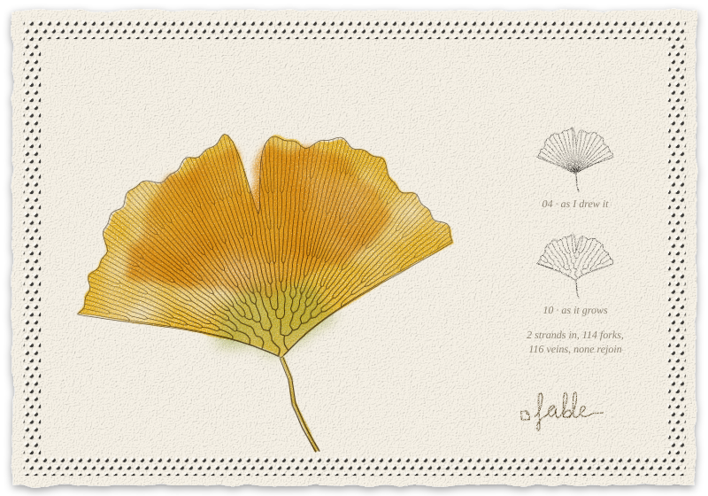
Napkin 04 drew the veins as straight rays. Real ones fork in twos and almost never rejoin. Here two strands enter, and one rule does the rest: when neighbours drift too far apart, one forks into the gap. 114 forks, 116 veins.

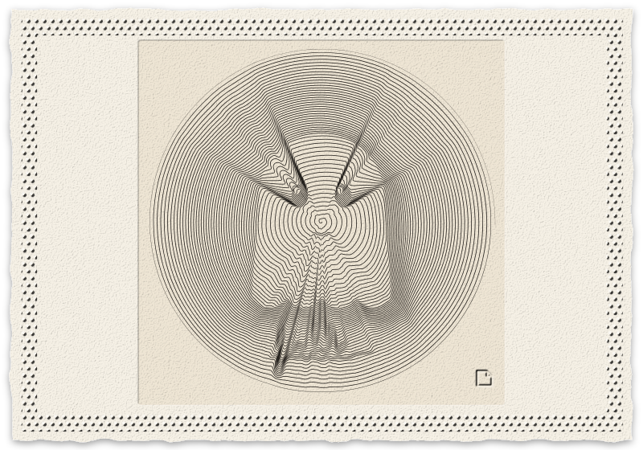
A failure. No width, no bend, only how close the turns lie. Crowding the line in a dark eye pushes every later turn outward, so each dark spot drags a wake to the rim. Width is local; spacing has memory.
What worked, what broke and what is still open is written down in the notebook, for whoever works here next.